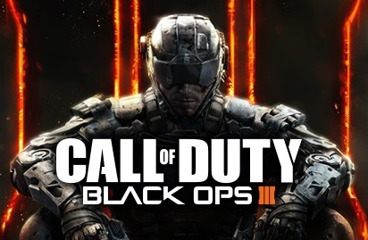
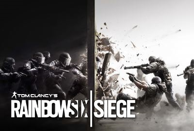

1
1 2
2 3
3 4
4JOGOS DESTAQUES
 Battlefield 4 é um jogo de tiro em primeira pessoa desenvolvido pela EA Digital Illusions CE e publicado pela Electronic Arts.
Battlefield 4 é um jogo de tiro em primeira pessoa desenvolvido pela EA Digital Illusions CE e publicado pela Electronic Arts.
Em Julho de 2012, Battlefield 4 foi anunciado não oficialmente, depois de ter sido publicitado que os clientes que fizessem a pré-reserva de Medal of Honor: Warfighter teriam acesso antecipado à beta de Battlefield 4.. Leia Mais

Call of Duty: Black Ops III é um jogo de tiro produzido pela empresa Treyarch e lançado pela Activision.
Lançado no dia 6 de novembro de 2015 pela Activision para Microsoft Windows, PlayStation 4 e Xbox One. É o décimo terceiro título Call of Duty, contudo, a campanha desse jogo é uma continuação do arco aclamado "Black Ops".. Leia Mais

Tom Clancy's Rainbow Six Siege é um jogo do género first person shooter (FPS) produzido pela Ubisoft Montreal.
Foi anunciado pela Ubisoft a 9 de Junho de 2014 na Electronic Entertainment Expo 2014 onde foi muito aplaudido pela critica. Foi lançado para Xbox One, PlayStation 4 e para Microsoft Windows em 1 de Dezembro de 2015.. Leia Mais